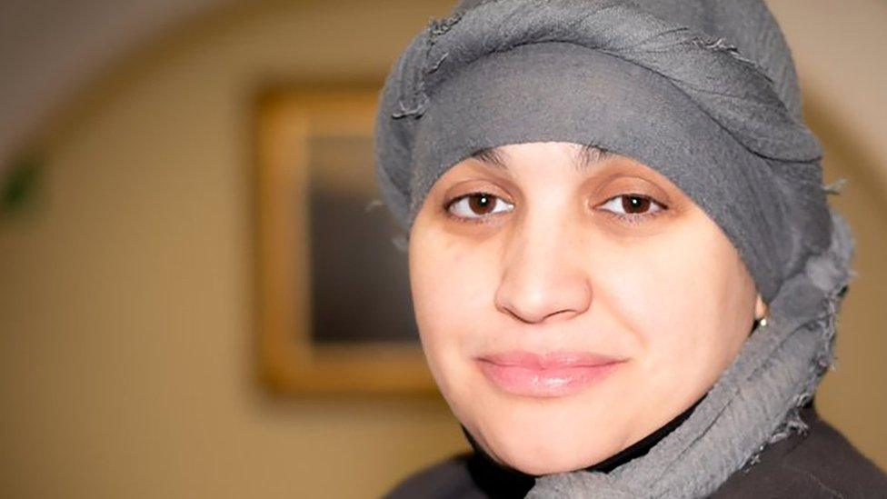
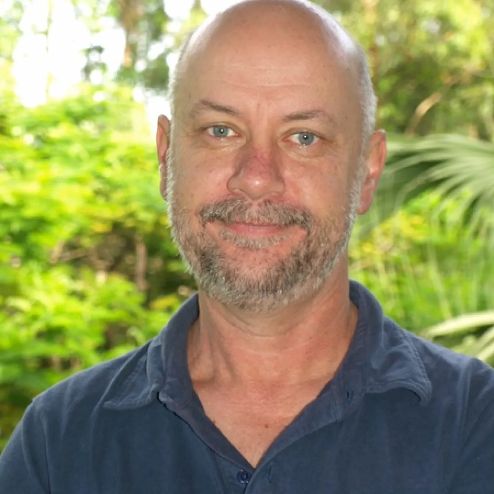
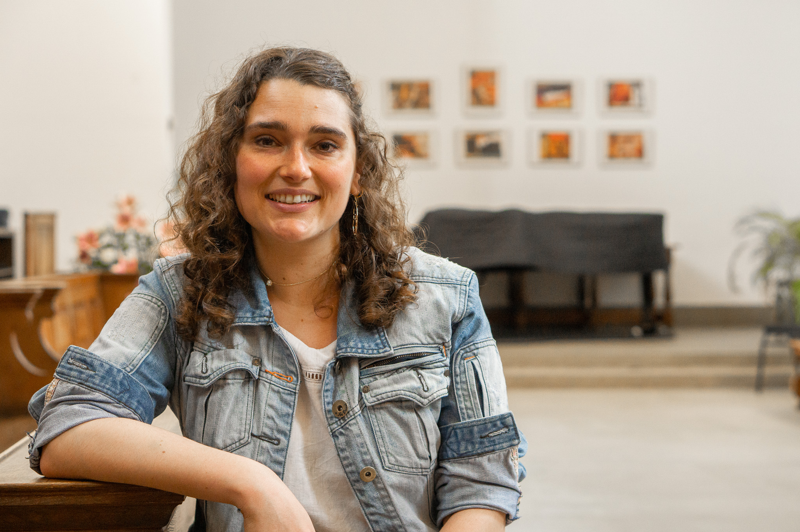
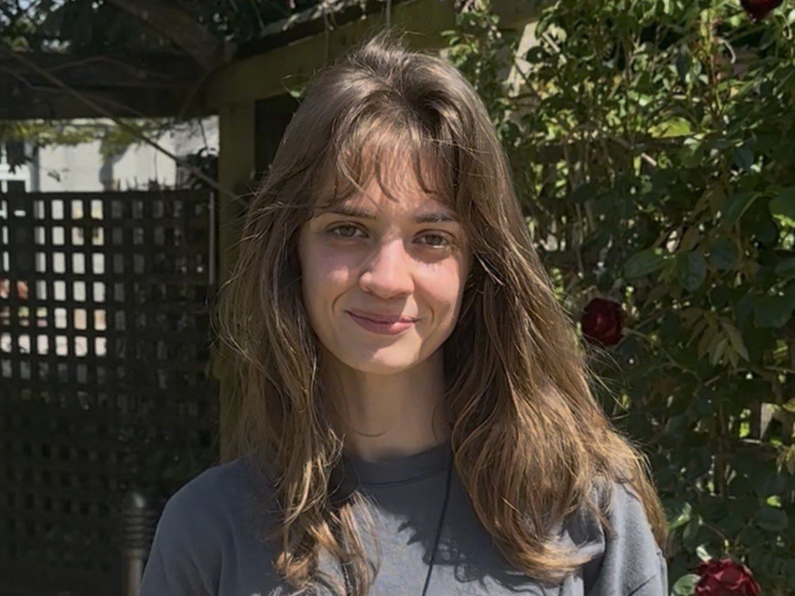

February 2024 – August 2024
Community-engaged research
Research with bereaved families, survivors, young people and local educators to understand what teaching about Grenfell should include.
The project, people and partnerships behind The Grenfell Curriculum.
Many teachers recognise the importance of teaching about Grenfell but feel underprepared to do so. This project provides practical support so schools can approach difficult material confidently, safely and responsibly.
The work is shaped through community-engaged research and sustained partnership with people directly affected by Grenfell, alongside educators and researchers.
It treats Grenfell as both a human story and a case of systemic injustice.
February 2024 – August 2024
Research with bereaved families, survivors, young people and local educators to understand what teaching about Grenfell should include.
September 2024 – January 2026
Development of the teacher CPD course, shaped by the Grenfell Education Working Group and wider community consultation.
February 2026 onwards
Classroom piloting, lesson resource development, teacher guidance, policy engagement and wider dissemination.
Associate Professor · University of Southampton
Project lead
Associate Professor · University of Oxford
Project team

Grenfell Tower Memorial Commission
Project team

Professor · University of Southampton
Project team

Chapel Scholar · University of Oxford
Project team
Undergraduate Intern · University of Southampton
Project team
Research Assistant · University of Southampton
Project team

Research Assistant · University of Southampton
Project team
Research Assistant · University of Southampton
Project team